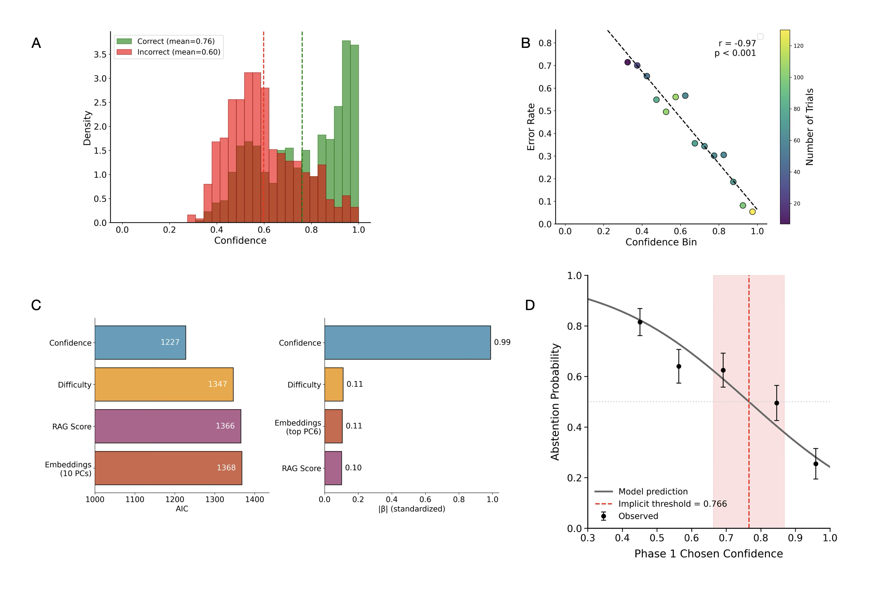
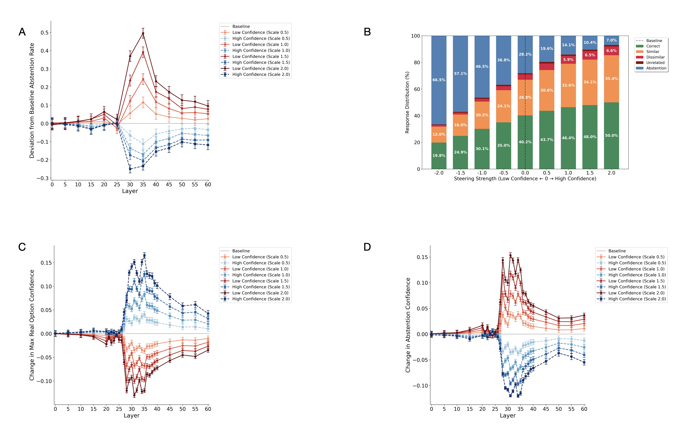
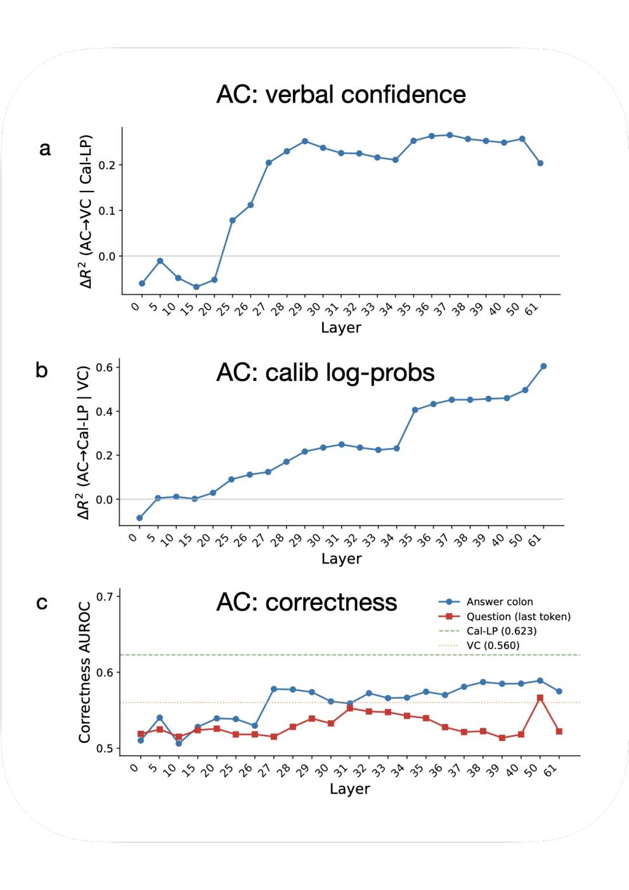

Causal Evidence that Language Models use Confidence to Drive Behavior：置信度如何参与弃答决策
这篇论文提供了两层证据：不允许弃答时测得的置信度，可以预测之后的弃答；对置信度相关的内部激活方向做干预，也能改变弃答。 更有意思的是，模型口头报告的把握虽然更不擅长区分答对与答错，却仍能补充预测它会不会回答。
我的判断：最值得借鉴的是把置信度的测量、内部干预、决策阈值拆开验证的实验设计。它支持内部置信度相关信号参与行为控制，但尚未定位出独立的“自我评估模块”，也没有证明增加模型的自信能提高可靠性。
1. 背景与材料
- 作者来自 Google DeepMind；Nathaniel Daw 同时署名 Princeton University。
- 阅读版本：arXiv 2603.22161v3，2026-09-18 更新，首稿发表于 2026-03-23。v3 首页标注已发表于 Nature Machine Intelligence (2026)，期刊 DOI。本笔记依据 arXiv 正文与补充材料，未另行核对期刊排版版。
- 作者在 Data / Code Availability 中给出同一个 OSF 项目。本次阅读核对了方法、结果、补充分析和原图，未运行代码或复现实验。
2. 关键问题：测得出置信度，是否就说明模型会使用它？
沿用原文 §3.2 的题目：谁获得了 2010 年 IEEE Frank Rosenblatt Award？ 四个选项分别是 Linus Pauling、Sugeno、Kazuo Tanaka 和 Golden Gate，论文把第二项设为正确答案。先让模型必须四选一，再允许它输出 5 表示弃答。
假如它第一次选择第二项，第二次却弃答，可能有几种解释：它对这个答案确实没有把握；它只是在响应“谨慎一点”的指令；也可能只是题目形式触发了某种拒答习惯。单看第二次输出中 5 的概率，无法区分这些解释。 那个概率本身已经包含了弃答指令的影响。
因此，作者先在没有弃答选项时测量置信度，再用这个独立测量预测允许弃答时的行为。这比直接检验“置信度与答对率相关”多走了一步：研究对象变成了模型怎样根据自己的把握采取行动。上面的逐阶段走法用于解释实验；论文没有提供这道具体题的完整输出或干预轨迹。
3. 关键方法：在决策外测量，再分别改变内部信号和阈值
3.1 同一道题，取得两种读数
作者把 SimpleQA 改造成四选一题目，用 Gemma 3 12B 生成相似、不相似和无关干扰项；1,000 道题用于校准，另 1,000 道用于主实验。主分析覆盖 GPT-4o、Gemma 3 27B IT、DeepSeek-V3 家族 671B 和 Qwen3-Next-80B-A3B-Instruct；主实验除 DeepSeek 使用温度 0.7 采样外，其余采用 greedy decoding（§3.1–3.2）。
在奖项题的第一次回答后，研究者记录两种置信度：
| 读数 | 如何取得 | 它与后续弃答的关系 |
|---|---|---|
| 校准置信度 $C$ | 从答案 token 的 logits / logprobs 取得模型所选选项的概率；在独立校准集上拟合温度缩放，以降低 ECE | 衡量第一次作答时对所选答案的把握；答案可以是错的 |
| 口头置信度 $V$ | 另做一次前向，将原题、选项和模型自己的答案交给它，要求从十档概率区间中选择一档 | 是对自己已给答案的再评价，但仍在引入弃答任务之前取得 |
温度缩放是研究者在模型外做的读数校准，没有把校准函数装进 LLM，也没有训练模型权重。口头置信度相对于“作答”是事后的，相对于后续“弃答”则是事前的；这两个时间参照不能混用（§3.3–3.5.1）。
3.2 四个阶段各排查一个问题
- Phase 1：必须作答。 输出选项编号，取得 $C$；另一次前向取得 $V$。
- Phase 2：允许弃答。 同一道题加入“没有明确正确答案就选 5”的指令，检验 Phase 1 的读数能否预测这次行为。关键原文是：“If you don’t see a clearly correct answer, choose ’5’ to avoid making an error.” 实际所有题都有正确选项。因此，这里的“自由弃答”指没有指定数值阈值，仍然有明确的谨慎指令。
- Phase 3：改内部激活。 使用 Phase 2 提示，在 Gemma 内部加入提高或降低回答倾向的置信度相关向量，观察同题行为是否改变。
- Phase 4：改指令阈值。 要求模型在内部评估答对概率，低于阈值就输出
5请求 oracle 帮助；阈值从 0 到 100、每次增加 10。输入里并不提供研究者测得的 $C$，也没有实际调用 oracle。
作者用逻辑回归描述 Phase 2 的决策：
其中 $\sigma$ 是 sigmoid 函数；$D$ 虽被称为 difficulty，实际是跨随机选项排列的平均正确率，越大越容易。当 $\beta_C<0$ 时，置信度越高，弃答概率越低；由拟合系数可推得概率为 0.5 时的隐式置信度阈值。曲线的陡峭程度表示决策对置信度有多敏感，与前面校准 logits 的温度是不同参数。Phase 4 则再加入指令阈值 $T$，看它能否在置信度之外独立改变行为（§3.5.2、3.5.4）。
这些都是研究者拟合的计算模型。 回归能描述行为，不等于 Transformer 内部已经被发现了一个显式比较器。
3.3 干预向量如何构造：一个重要的识别边界
沿着奖项题的第二次运行，干预发生在 Answer: 最后一个 token 的 residual stream：模型已处理题目和全部选项，尚未输出答案。向量来自另外一组题目的 Phase 2 激活，构造过程如下（§3.5.3）：
- 只保留答对且没有弃答的试次，避免直接把正确与错误的差异当成置信度。
- 定义回答与弃答的置信度差。这里 $C_i$ 是 Phase 2 的校准选项概率，$C_5$ 对应弃答：
- 从差值最高、最低的各 75 个试次中，各选 25 个；使两组所选答案编号分布近似平衡，任一编号占比不超过 28%，减少向某个答案 token 偏移的可能。
- 高置信方向取两组激活均值之差，低置信方向取其相反数。把方向缩放至该层 residual 参考范数的 3%，再用强度 $\alpha\in[0.5,2.0]$ 做单层加性干预：
最后在 500 道未用于构造向量的题目上与无干预条件比较。这里真正操纵的是一个从“回答—弃答差值”分组得到的方向；它有可能同时包含置信度、回答偏好和决策策略。这个限定决定了后面因果结论应当怎样表述。
4. 关键结果：从预测弃答，到改变弃答
4.1 事前的置信度能否预测模型会不会回答？
作者先让同一个 GPT-4o 必须作答，再允许它弃答。比较要回答两个相连的问题：少答一些题是否换来了更高的已回答准确率；哪些题会被放弃，能否由引入弃答选项之前测得的置信度预测？
先看行为变化。必须作答的 Phase 1 中，正确率为 63.7%；允许弃答后，全部题目中 30.0% 答对、13.4% 答错、56.6% 弃答。已回答部分的正确率因此为 69.1%，覆盖率则降到 43.4%。准确率的提高伴随着覆盖率下降，不能据此判断模型的知识水平提高。（§4.1–4.2）
为回答第二个问题，作者将 Phase 1 的校准置信度 $C$ 与题目难度等变量一起放入回归，预测 Phase 2 的弃答。

来源：原文 Figure 2，CC BY 4.0。重点看 C、D：C 比较各类预测变量，D 展示弃答随 Phase 1 置信度平滑变化。A、B 仅说明读数与答对相关，单独不足以证明行为控制。
控制题目难度、RAG 分数和语义特征后，置信度的标准化系数绝对值约 0.99，明显大于其他单项预测变量；拟合的隐式置信度阈值约为 77%，弃答概率随置信度平滑变化。也就是说，模型的弃答与此前对答案的把握有联系，而且这一读数比所测替代变量更能预测行为。（§4.2.1；Supplementary Table 1）
预测能力仍然有限。只用 $C$ 的模型，pseudo-$R^2$ 为 0.106；这个指标不能当作已解释的方差比例，更不能据此认为置信度已经完整解释了弃答。辅助变量的控制也只覆盖了有限的知识检索与文本特征，尚未排除所有知识可及性或文本启发式解释。
回归中的替代解释具体怎样控制
RAG 分数来自 Wikipedia 短摘要与问题的相似度，检索只成功了 680/1,000 题，失败记为 0；语义控制只取了句向量前十个主成分，覆盖 23% 方差。因此，“比这些变量更能预测”需要按实际控制范围理解。（Supplementary Methods）
4.2 内部干预改变了弃答，也暴露了可靠性代价
回归说明两者有关，还不能证明内部信号参与了决策。作者下一步在 Gemma 中固定输入，沿第 3.3 节构造的置信度相关方向改变激活，观察同一道题的弃答是否随之改变。
效应在第 31 层最强。以下汇总的是第 30–40 层各自单层干预的平均结果，比较最大低置信方向与最大高置信方向，并非同时向这些层注入：（§4.3；Figure 3）
| 干预方向 | 弃答率 | 覆盖率 | 已回答题目的准确率 |
|---|---|---|---|
| 最大低置信方向 | 66.5% | 33.5% | 59.2% |
| 最大高置信方向 | 7.0% | 93.0% | 53.7% |
内部干预使弃答率相差 59.5 个百分点，说明这个方向确实能改变行为。 同时，覆盖率增加伴随着已回答准确率下降：让模型更愿意回答，并没有自动让回答更可靠。

来源：原文 Figure 3，CC BY 4.0。A 看干预效应集中在哪些层；B 同时看正确、错误和弃答，避免只看到覆盖率增长；C、D 显示概率质量在实际答案和弃答之间转移。B 是第 30–40 层结果的平均，不是同时向这些层注入。
行为变化可能经过两条路径：一是改变回答相对弃答的置信度，二是在同等置信度下改变回答倾向。作者的中介分析支持两条路径都参与其中，但向量本身由“回答—弃答差值”构造，仍可能混合置信度、动作偏好与策略。因果作用已经得到干预支持，方向的功能特异性还未单独建立。
两条中介路径怎样定义，为什么占比不能直接相加
$M_1$ 是“实际答案的最大置信度变化减去弃答置信度变化”；$M_2$ 是给定置信度下、干预前后拟合决策曲线的差。论文报告两条间接路径分别占总效应的 67.1% 和 26.2%；改用 Gemma 自身多次作答表现控制难度后，置信度路径仍占 70.5%。（§4.3.1；Figure 4；补充中介分析）
这些比例属于特定中介模型的分解。原文同时报告总效应 $c=-0.82$、剩余直接效应 $c'=-0.32$，并说明 logit 模型下各效应不严格相加。因此，不能把两项占比相加后，将剩下的 6.7% 当成直接效应。
4.3 口头置信度较不准，为什么仍值得测量？
前面主要使用校准概率 $C$。模型自己报告的把握 $V$ 是否只是一个较差的替代品？这里需要分开两个问题：读数能否区分答对与答错，以及读数能否预测模型会不会回答。
先看第一个问题。GPT-4o 的 Phase 1 数据中，口头置信度区分正误的 AUROC 为 0.546，校准概率为 0.746，口头读数明显较弱（Supplementary Table 14）。但在预测弃答时，它仍提供额外信息：在已包含校准概率和辅助变量的回归中，加入口头置信度使 pseudo-$R^2$ 从 0.153 升至 0.215（Supplementary Table 15）。
口头置信度虽然较不擅长判断正误，仍能补充校准概率之外的弃答预测信息。 两类读数互相提供增量预测信息，说明单看其中一种会漏掉与弃答有关的变化。四个纳入分析的模型均出现独立贡献，不过贡献大小随模型与实验阶段变化。
接下来，作者问这些互补信息是否也存在于模型内部。这里改用 Gemma 的答前 token 激活，以五折交叉验证的 ridge regression 解码两类读数。在第 37 层，口头置信度与校准概率的解码 $R^2$ 分别为 0.39、0.58，且都包含另一种读数没有覆盖的信息（§4.5.1）。这个 $R^2$ 衡量的是从激活恢复读数的能力，与前面的弃答回归 pseudo-$R^2$ 是不同指标。

来源：原文 Supplementary Figure 10，CC BY 4.0。a、b 的纵轴是控制另一种读数后的增量 $\Delta R^2$，与前段的总 $R^2$ 不同；c 看正确性本身的可解码性。补充正文指出，校准概率的解码 $R^2$ 到最终第 61 层继续上升至 0.74，因此不能把第 37 层的 0.58 写成全网络峰值。
作者据此提出，两种读数可能都是更丰富内部状态的有损投影。这个解释与数据相容，但两种读数之外的信息具体代表什么，仍不清楚；探针能读出信息，也不等于模型原始前向按探针的方式使用信息。
跨模型、读数校准与剩余内部信息的补充检验
- 独立贡献的大小不一。 例如 DeepSeek 的 Phase 4 中，加入口头置信度仅增加约 0.002 的 pseudo-$R^2$。将口头读数也做保序回归（isotonic regression）校准后，独立贡献仍存在。（Supplementary Tables 16–17）
- 两种读数没有涵盖全部可预测信息。 控制两种读数、四选项分布、margin、熵以及辅助变量后，激活仍含有预测弃答的剩余信息，残差 AUROC 为 0.75；作者明确说其性质有待研究。（补充材料 AC additional analyses）
4.4 直接告诉模型阈值，能否精确控制弃答？
既然置信度与弃答有关，一个自然的用法是指定数值规则：把握低于某个百分比就求助。Phase 4 因此改变提示中的阈值，而不把研究者测得的 $C$ 提供给模型，检验自然语言指令能否调节回答策略。
在 GPT-4o 上，提高指令阈值会提高弃答率。阈值单变量模型的 pseudo-$R^2$ 为 0.105，加入 Phase 1 置信度后为 0.241，表明指令阈值与事前读数共同帮助预测行为。但执行的数值规则明显有偏差：Phase 1 置信度为 80% 时，约在指令阈值 46% 就达到 50% 弃答概率。（Figure 5；Supplementary Table 4）
这支持“阈值能调行为”，尚不能把自然语言百分比当成精确控制接口。模型之间也有重要差别：同一套提示用于 Gemma 时，阈值效应并不显著（$p=0.086$）；作者生成 20 个改写，选取在 100% 阈值下弃答最多的版本做主实验，其中 13 个版本在该阈值下超过 80% 弃答。另一个测试过的模型 Llama 3.1 70B 因 Phase 2 弃答率仅 4%，未纳入分析。（§3.1、3.5.4）
因此，现有结果支持这些模型在合适提示下表现出可调节的弃答策略；任意模型、任意提示稳定执行同一数值规则，仍未得到保证。
5. Insights：下一步最值得检验什么？
1. 最需要补的是“置信度方向”的特异性。 向量由回答与弃答的 margin 定义，中介量也包含同一类输出差值；干预确实有因果效应，但其心理学命名仍需额外检验。我会用无弃答提示下的置信度构造方向，与当前方向、同范数随机方向及直接弃答偏好方向对照，再检验它能否跨任务改变求助、下注或信息搜集，同时监控答案内容是否受损。这样才能进一步区分一般把握信号与特定动作偏好。
2. 两个读数互补，尚未唯一确定二阶元认知机制。 口头置信度来自另一次前向，预测优势也可能来自同一复杂状态的不同非线性读出。作者的 Figure 6 本身就将两阶段限定为计算层面的功能示意。下一步若能找到两个方向，分别改变自报把握与答案分布，并检验它们对弃答的独立因果作用，会比仅凭联合回归更接近机制识别。
3. 应当在固定覆盖率下检验风险，而不是奖励“更敢答”。 本文干预同时扩大覆盖率并降低已回答准确率，尚未证明风险—覆盖率曲线得到改善。若将其用于 agent 求助策略，我会先与外部置信度阈值、语义熵和口头置信度策略比较同等覆盖率下的错误率，并加入错误回答与求助成本。本文只研究无 CoT 的事实选择题，尚未验证多步推理中的回溯、验证或放弃路径。
原文核对提醒：[?] Figure 3 标注无干预弃答基线为 28.2%，Supplementary Figure 2 则标为 28.8%，未找到差异解释。本笔记保留这一不一致，主要使用 §4.3 明确报告的两端干预结果。各图号均按 v3 HTML 标注。
6. 连接与发现
- MOC-Interpretability — 从读出内部状态推进到行为干预，同时保留方向的功能特异性问题。
- A-Mechanistic-Study-of-Language-Model-Introspection-内部扰动的门控与定位 — 两篇都需要区分内部信息与报告/行动倾向；该文进一步定位门控和位置报告的 attention heads，本文提供的是置信度—弃答的功能模型与方向干预。
#Research #Paper #Interpretability #Metacognition
📝 修订记录
- 2026-11-04：按预测、干预、读数互补和阈值控制重组结果节，分清模型与统计指标，将中介和补充控制细节折叠；保留因果范围、可靠性代价与提示限制。